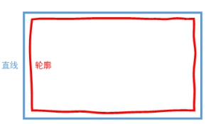
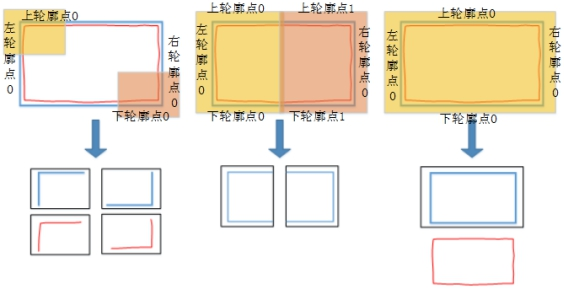
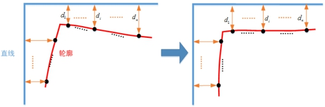
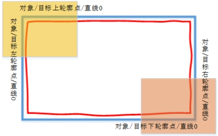
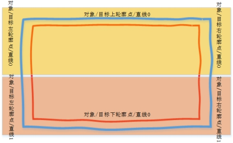
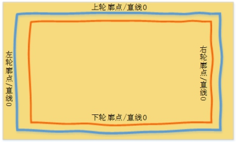

在对位应用中，如图1所示，当对位目标和对象其中之一是柔性轮廓，另一个是刚性直线时，需要用到轮廓与直线对位工具。

| 分类 | 参数名称 | 参数描述 |
|---|---|---|
| 属性窗口 | 拍照模式 | 选择拍照模式：全图模式/对角模式（左上对右下）/对角模式（左下对右上）/左右对半模式/上下对半模式。 |
| 对位模式 | 选择对位模式：当对象为直线，目标为轮廓时，选择直线对轮廓；当对象为轮廓，目标为直线时，选择轮廓对直线。 | |
| 轮廓对位方法 | 选择轮廓对位方法：理想距离/均值距离/对应点距离差。 |
|
| 图像窗口 | 无 | 无 |
| 数据链 | 水平理想距离 | 对位计算中的水平理想距离。 |
| 垂直理想距离 | 对位计算中的垂直理想距离。 | |
| 平台轴方向 | 平台各轴的正方向。 | |
| 轮廓点数据 | 根据实际项目配置相应方向的轮廓点数据，具体参考详细说明。 |
|
| 直线数据 | 根据实际项目配置相应方向的直线数据，具体参考详细说明。 |
|
| 高级界面 | 无 | 无 |
| 分类 | 参数名称 | 参数描述 |
|---|---|---|
| 监视窗口 | 相对对位偏移量 | 对位计算出的相对对位偏移量结果 |
| 执行结果 | 工具执行结果 | |
| 执行时间 | 工具执行时间 | |
| 图像窗口 | 无 | 无 |
| 数据链 | 相对对位偏移量 | 对位计算的相对对位偏移量结果，供后序工具使用，同监视窗口 |
在轮廓与直线对位场景中，分为三种不同的成像模式。具体成像模式参见表1和图2。其中对角模式又可分为左上角和右下角对位、左下角和右上角对位，对半模式又分为左右对半模式和上下对半模式。

表1 成像模式分类
| 产品模式 | 特点 | 有效信息 | 对位精度 |
|---|---|---|---|
| 对角模式 | 成像系统拍摄物体对角，通过对角的轮廓与直线对齐完成对位 | 少 | 低 |
| 对半模式 | 两相机各拍摄物体的一半轮廓，组合起来可获得物体四周整体的轮廓，由四周轮廓对齐进行对位，分为上下对半与左右对半 | 中 | 中 |
| 全图模式 | 拍摄整个物体，由同一幅图像中物体的四周轮廓对齐完成对位 | 高 | 高 |
从信息采集的角度来说，三种成像模式的有效信息依次递增。有效信息越多，对位精度越高，即三种成像模式的对位精度也依次递增。因此三种成像模式的对位精度排序是，对角模式小于对半模式，对半模式小于等于全图模式。
轮廓对位工具的基本原理是，迭代优化对位偏移量，计算各个轮廓点到直线的距离与居中对位距离的差值，使得差值的平方和最小，对象和目标居中对准。
轮廓对直线时，对位前，各个轮廓点到直线的距离不等；对位后，各个轮廓点到直线的距离近似相同，并达到居中对位状态，如图3所示。

因而在计算中居中对位距离不同，优化目标函数也不同：
理想距离：对位时以轮廓点到直线距离减去理想距离差值作为优化目标，将轮廓点到直线的距离调整到理想值。
平均距离：对位时以轮廓点到直线距离减去平均距离的差值作为优化目标，将轮廓点到直线的距离调整到一个稳定均值附近。
差值距离：对位时以差值距离作为优化目标，对位时将轮廓的对应点到直线的距离调整到对应点相等的居中状态。
拍照模式为对角模式（左上对右下）/（左下对右上）时，需要配置的轮廓点数据与直线数据如图4（以左上对右下对角模式为例）。

拍照模式为上下对半模式时，需要配置的轮廓点数据与直线数据如图5所示。

拍照模式为左右对半模式时，需要配置的轮廓点数据与直线数据如图6所示。

拍照模式为全图模式时，需要配置的轮廓点数据与直线数据如图7所示。

工程中，输入的轮廓点数据通常是由轮廓特征点定位工具定位到的轮廓特征点数据；输入的直线数据通常由直线生成工具生成。
用法参见“\Samples\标准标定+轮廓直线对位.gvp”的轮廓与直线对位计算工具。